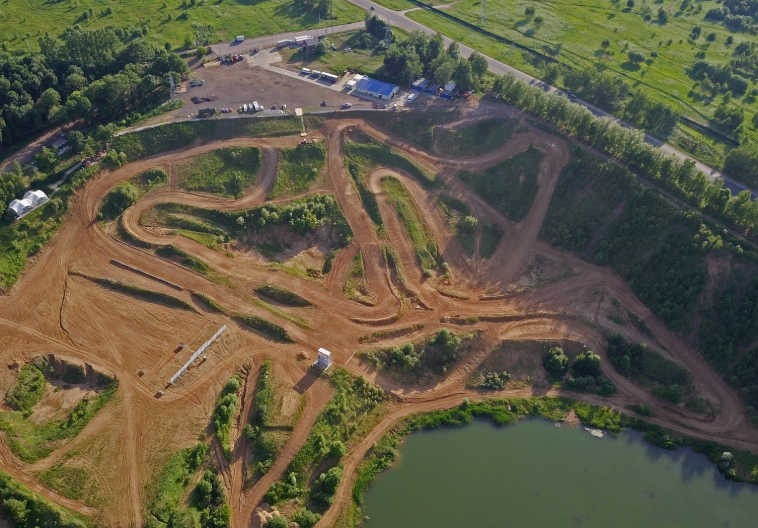

Если вы истинный любитель мотоспорта или просто ищете увлекательное хобби, питбайк — это отличный выбор. Однако, как и любая техника, питбайки требуют должного ухода и регулярного технического обслуживания
- запуск и остановка двигателя
- график технического обслуживания
- проверка уровня масла и его замена
- обслуживание воздушного фильтра
- регулировка свободного хода на рукоядке аклесератора
- регулировка свободного хода на карбюраторе
- регулировка сцепления
- рычаг переключения передач
- свеча зажигания
- тормозная система
- износ тормозных колодок
- колесные диски
- давление в шинах
- проверка шин
- приводная цепь
- ролик натяжения цепи
- регулировка приводной цепи
- обслуживание аккумулятора